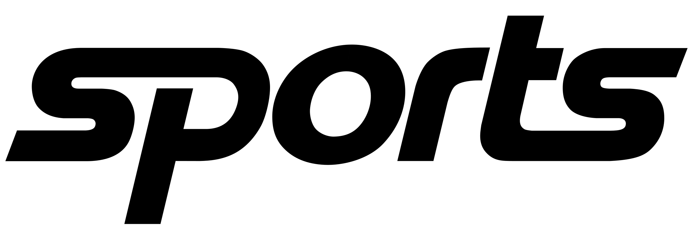

- 
-
Пошук по сайту...
-
ПОШУК
ГЛАВНЫЕ НОВОСТИ

Динамо
Динамо завжди сплачувало податки в повному обсязі — перевірка останніх місяців свідчить саме про це.

Реал
Півзахисник Манчестер Сіті Кевін де Брюйне може продовжити кар'єру в королівському клубі.

Шахтар
Скаут «Шахтера» Глеб Корниенко в интервью Tribuna.com рассказал детали перехода полузащитника Соломона в донецкий клуб.

Бокс
Анатолий Ломаченко получил пояс WBC за вклад в развитие бокса.
ФЕДЕРЕР СЫГРАЛ 1500 МАТЧЕЙ

Легендарный швейцарский теннисист Роджер Федерер провел свой 1500-й матч (1232-268) на профессиональном уровне. 20-кратный обладатель титулов Большого Шлема в первом круге турнира в Базеле легко разобрался с квалифаером Питером Гойовчиком. Таким образом, Федерер стал вторым, кто достиг отметки в полторы тысячи сыгранных матчей.
ЧИТАТЬ БОЛЬШЕ >>>
БАСКЕТБОЛ

Баскетболистки Литвака потерпели первое поражение в чемпионате.
Читать больше >>>